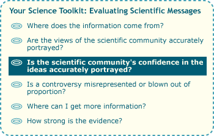

Contrary to popular opinion, science doesn't prove a thing …

All scientific ideas — even the most widely-accepted and best-supported, like the germ theory of disease or basic atomic physics — are inherently provisional, meaning that science is always willing to revise these ideas if warranted by new evidence. However, that tentativeness doesn't mean that scientific ideas are untrustworthy … and this is where some media reports on science can mislead, mistaking provisionality for untrustworthiness. For example, in our sample article, the evidence for humanity's contribution to global warming is depicted as shaky ("Some scientists believe that human-produced carbon dioxide is causing Earth to warm dangerously. This view is supported by some ice core studies."), even though evidence supporting the idea is actually quite strong. Sure, science can't prove that human activities lead to global warming, but neither can it prove the existence of gravity; yet both ideas are trustworthy and strongly supported by evidence.

Some policies make the same misinterpretation of provisionality in science. For example, in 2002, the U.S. government called for more studies to resolve "numerous uncertainties [that] remain about global warming's cause and effect" before taking action. It is true that numerous uncertainties about global warming existed in 2002 and exist today. Uncertainty and tentativeness are inherent aspects of the nature of science. However, even in 2002, climatologists had a strong and well-supported understanding of key features of global warming.
HEED THE HYPE
On the opposite end of the scale, some media reports blow the implications of scientific findings out of proportion, failing to mention caveats and additional research yet to be done. For example, every few years, gene therapy makes a spotlighted appearance in the news — and for good reason. Gene therapy holds the promise of correcting genetic diseases at their source by replacing broken genes with working versions, but this is still largely just a promise. A 1993 newspaper article, for example, predicted that "Human DNA will be a major heart 'drug' of the near future with gene therapy a common treatment procedure," though such treatment was still unavailable as of 2007. Such sensationalized reports ignore the logistical difficulties of getting new genes to the cells that need them. So while the nightly news may herald widespread gene therapy as "just around the corner," a deeper investigation into the science behind the hype would paint a different picture. Almost 30 years after the first rumblings about the possibility of gene therapy, the technique is still in experimental stages.